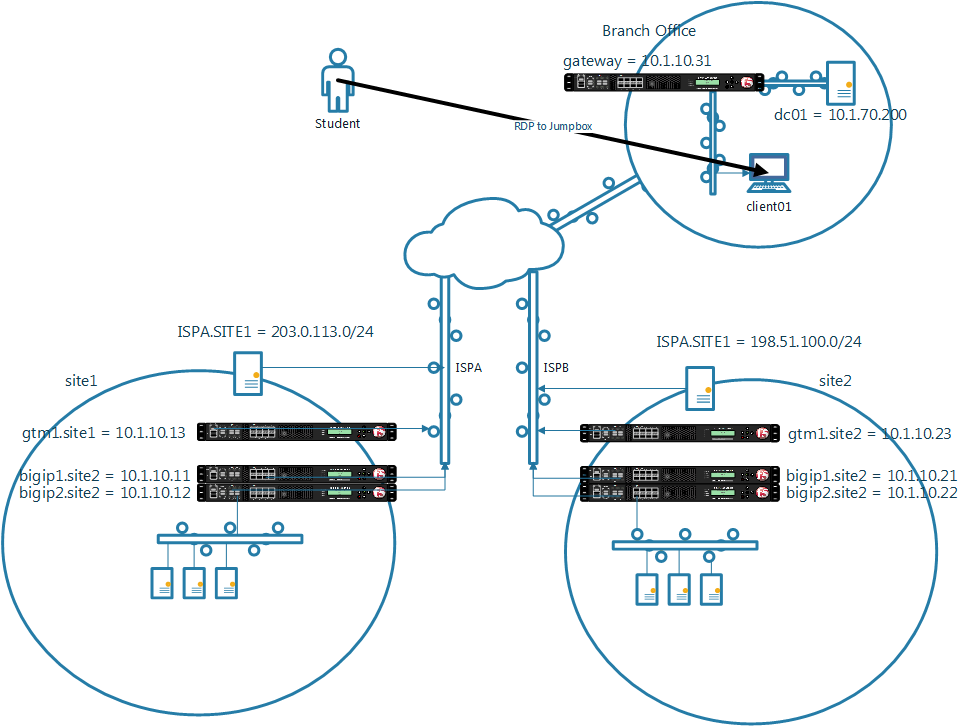

agility_dns_docs_17
0.1
DNS LAB – GETTING STARTED
Lab Topology
Sample H2
Another H2
Sample H3
Sample H4
BIG-IP DNS: Global Server Load Balancing
Exercise 1.1 – Initial Setup
Exercise 2.1 – GSLB Active/Standby Data Centers
Exercise 2.2 – GSLB Active/Active Data Centers
Exercise 2.3 – GSLB with Topology
Exercise 3.1 – Creating a Synchronization Group
F5 DNS 201
Learn More
agility_dns_docs_17
Docs
»
Lab Topology
View page source
Lab Topology
¶
The Agility lab is hosted in the cloud and managed by Ravello
Sample H2
¶
Sample content.
Another H2
¶
Sample H3
¶
Sample H4
¶
Sample H5
¶
Sample H6
¶
And some text.
